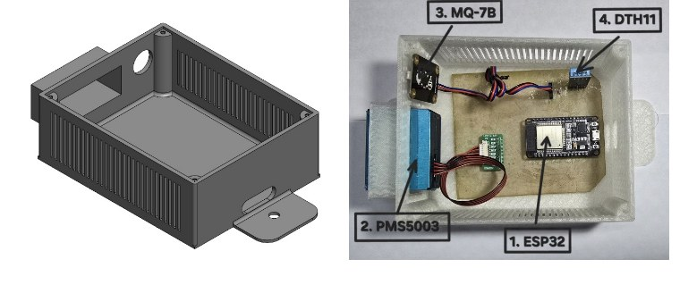
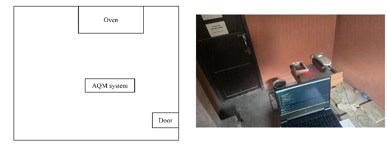
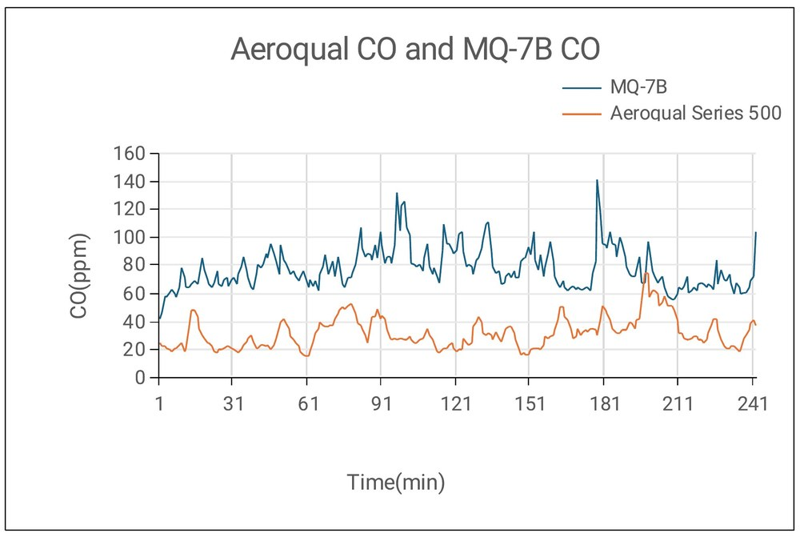
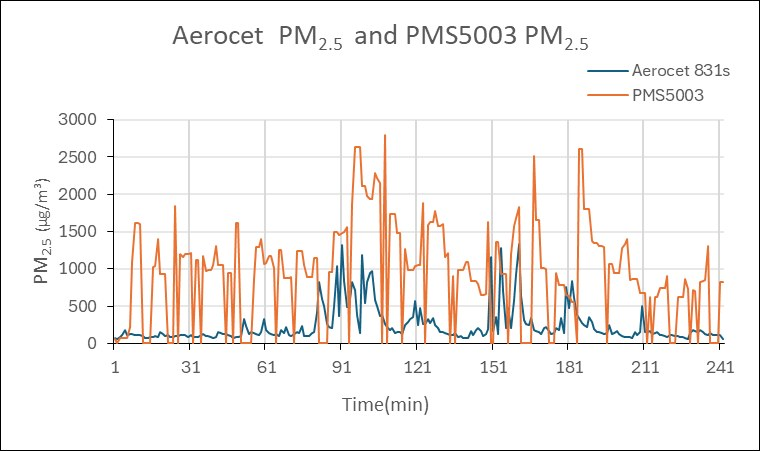

IoT-Based Low-Cost Indoor Air Quality Monitoring and Data Logging System
Comparative analysis with standard devices
Overview
Accurate air quality monitors are expensive and usually fixed in one place, which makes them hard to use in rural homes. In Nepal about 69% of people still cook with biomass, so indoor smoke is a serious health problem.
This project builds a portable, real-time monitor from low-cost parts, then tests how close its readings come to professional instruments.
The device
- ESP32-WROOM-32 microcontroller with built-in Wi-Fi.
- PMS5003 laser sensor for particulate matter (PM1, PM2.5 and PM10).
- MQ-7B sensor for carbon monoxide.
- DHT11 sensor for temperature and humidity.
- A custom circuit board, and a ventilated enclosure designed in SolidWorks and 3D printed in PLA.
- Readings go over Wi-Fi to a Python API and a MySQL database, and a Flutter mobile app shows them live on Android and iOS.
- The whole system draws 352.5 mA at 5 V, about 1.76 W, so a USB port can power it.

How it was tested
The monitor ran for 4 hours in a closed 26 m³ room at the Air Pollution and Health Research lab, with no airflow. A traditional one-pot stove burning biomass was the pollution source, following a cold-start water-boiling test. The sensors sat 1 m from the stove at 1.5 m height, about where a person breathes.
A Met One Aerocet 831 measured particulate matter and an Aeroqual Series 500 measured carbon monoxide, as reference instruments.

Results
- Both low-cost sensors followed the same rise and fall as the reference instruments during combustion.
- The MQ-7B consistently read higher than the Aeroqual for carbon monoxide, but its deviation was the more acceptable of the two.
- The PMS5003 read higher than the Aerocet for PM1, PM2.5 and PM10 and swung more, so it showed the larger deviation.
- Temperature stayed between 20 and 30 °C and humidity between 40 and 60% during the test.


Conclusion
Low-cost sensors can track air quality well once they are calibrated, and the monitor is cheap and low-power enough to carry around. Next steps in the paper: better calibration, more pollutant sensors, and real-time correction of the readings.
This is a draft of the paper, and my co-authors and I wrote it together.